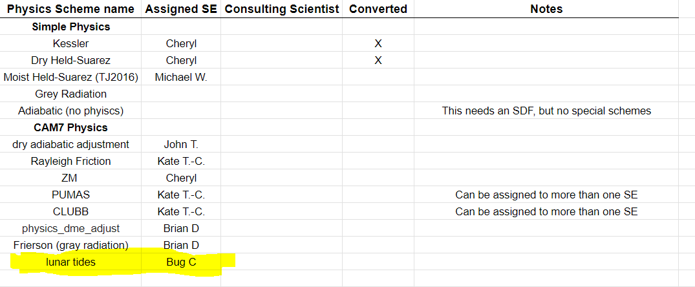
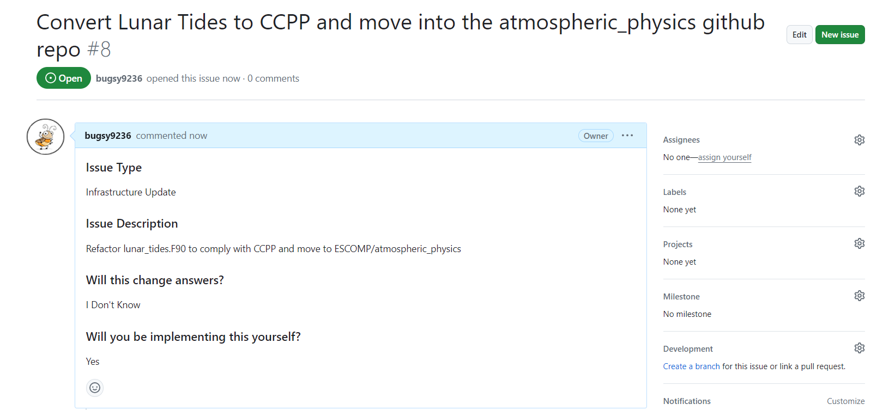
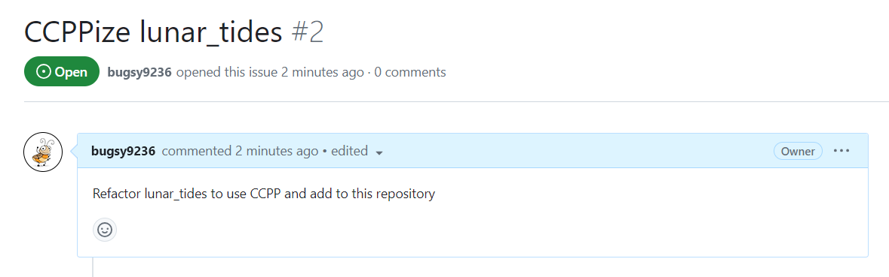

Walkthrough Example
GASP! Our favorite imaginary software engineer Bug E. Code has been tasked with CCPP-izing lunar_tides*!
*Scheme doesn't do anything outside of WACCM; chosen because it won't be CCPP-ized for real any time soon (so you can see what the existing code looks like)
Here's how Bug completes this assignment...
0 - Background & prep work
-
Bug updates the conversion spreadsheet with his new assignment.

-
Bug opens issues in ESCOMP/CAM and ESCOMP/atmospheric_physics


-
He sets up his sandbox (with his preexisting forks) and copies the portable layer via the following commands:
git clone -o bugsy9236 https://github.com/bugsy9236/CAM CAM
cd CAM
git fetch --tags ESCOMP
git branch ccppize-lunar-tides ESCOMP/cam_development
git checkout ccppize-lunar-tides
git push -u bugsy9236 ccppize-lunar-tides
bin/git-fleximod update
cd ..
git clone -o bugsy9236 https://github.com/bugsy9236/CAM-SIMA CAM-SIMA
cd CAM-SIMA
git remote add ESCOMP https://github.com/ESCOMP/CAM-SIMA
git fetch --tags ESCOMP
git branch ccppize-lunar-tides ESCOMP/development
git checkout ccppize-lunar-tides
git push -u bugsy9236 ccppize-lunar-tides
bin/git-fleximod update
mkdir src/physics/ncar_ccpp/lunar_tides
cp ../CAM/src/physics/cam/lunar_tides.F90 src/physics/ncar_ccpp/lunar_tides/
cd src/physics/ncar_ccpp
git remote add bugsy9236 https://github.com/bugsy9236/atmospheric_physics
git fetch bugsy9236
git checkout -b ccppize-lunar-tides
git push -u bugsy9236 ccppize-lunar-tides
1 - Convert the portable layer
1a - Change routine names
Bug notes that there are three routines in lunar_tides.F90:
public :: lunar_tides_readnl
public :: lunar_tides_init
public :: lunar_tides_tend
- He ignores
lunar_tides_readnlfor now (just leaves it as is) - He's pretty sure that
lunar_tides_initis an init routine, but confirms this by checking where it is called inphyspkg.F90. It is indeed called byphys_init, so he can comfortably keep thelunar_tides_initroutine name as is. No action needed here yet. - Bug determines that
lunar_tides_tendis called intphysac(called every timestep after the coupler), so he renameslunar_tides_tendtolunar_tides_runthroughout the module and proceeds
End result:
public :: lunar_tides_readnl
public :: lunar_tides_init
public :: lunar_tides_run
1b - Add required \htmlinclude lines
Bug adds the necessary two lines above both the lunar_tides_init and lunar_tides_run routines.
!> \section arg_table_lunar_tides_init Argument Table
!! \htmlinclude lunar_tides_init.html
subroutine lunar_tides_init()
use cam_history, only: addfld
use time_manager,only: timemgr_get_calendar_cf
if (apply_lunar_tides) then
if (timemgr_get_calendar_cf().ne.'gregorian') then
call endrun('lunar_tides_init: calendar must be gregorian')
endif
call addfld('UT_LUNAR', (/ 'lev' /), 'A','m/s2','Zonal wind tendency due to lunar tides')
call addfld('VT_LUNAR', (/ 'lev' /), 'A','m/s2','Meridional wind tendency due to lunar tides')
end if
end subroutine lunar_tides_init
!==========================================================================
!==========================================================================
!> \section arg_table_lunar_tides_run Argument Table
!! \htmlinclude lunar_tides_run.html
subroutine lunar_tides_run( state, ptend )
use time_manager, only: get_curr_date, get_julday
use physconst, only: pi, rearth
use ppgrid, only: pver
use cam_history, only: outfld
type(physics_state), intent(in) :: state
type(physics_ptend), intent(out):: ptend
...
1c - Clean up dummy argument dimensions
Bug makes sure no input/output variables have named dimensions in their declaration inside the routines. In this case, there are no dimensioned variables in the argument lists. So hooray!
1d - Use kind_phys instead of r8
Bug changes the use statement
use shr_kind_mod, only: r8=>shr_kind_r8
to
use ccpp_kinds, only: kind_phys
And does a find-and-replace for r8 with kind_phys
lunar_tides_run change (old -> new):
subroutine lunar_tides_run( state, ptend )
use time_manager, only: get_curr_date, get_julday
use physconst, only: pi, rearth
use ppgrid, only: pver
use cam_history, only: outfld
type(physics_state), intent(in) :: state
type(physics_ptend), intent(out):: ptend
integer :: tod,yr,mm,dd
real(r8) :: jd,nu,lt,lun_lt
integer :: i, k
real(r8), parameter :: deg2hrs = 1._r8/15._r8
real(r8), parameter :: rad2deg = 180._r8/pi
real(r8), parameter :: rad2hrs = rad2deg*deg2hrs
real(r8), parameter :: tod2hrs = 24._r8/86400._r8
real(r8), parameter :: hrs2rad = 1._r8/rad2hrs
subroutine lunar_tides_run( state, ptend )
use time_manager, only: get_curr_date, get_julday
use physconst, only: pi, rearth
use ppgrid, only: pver
use cam_history, only: outfld
type(physics_state), intent(in) :: state
type(physics_ptend), intent(out):: ptend
integer :: tod,yr,mm,dd
real(kind_phys) :: jd,nu,lt,lun_lt
integer :: i, k
real(kind_phys), parameter :: deg2hrs = 1._kind_phys/15._kind_phys
real(kind_phys), parameter :: rad2deg = 180._kind_phys/pi
real(kind_phys), parameter :: rad2hrs = rad2deg*deg2hrs
real(kind_phys), parameter :: tod2hrs = 24._kind_phys/86400._kind_phys
real(kind_phys), parameter :: hrs2rad = 1._kind_phys/rad2hrs
1e - Remove use statements
Bug removes the use statements (except for addfld and outfld calls) and adds the relevant variables to the calling list. He also comments out any use statements from cam_history as well as any addfld and outfld calls. He also moves the namelist variable to module-level (above the CONTAINS statement) and passes it in to the calling list for _init
For lunar_tides_init:
subroutine lunar_tides_init()
use cam_history, only: addfld
use time_manager,only: timemgr_get_calendar_cf
if (apply_lunar_tides) then
if (timemgr_get_calendar_cf().ne.'gregorian') then
call endrun('lunar_tides_init: calendar must be gregorian')
endif
call addfld('UT_LUNAR', (/ 'lev' /), 'A','m/s2','Zonal wind tendency due to lunar tides')
call addfld('VT_LUNAR', (/ 'lev' /), 'A','m/s2','Meridional wind tendency due to lunar tides')
end if
end subroutine lunar_tides_init
subroutine lunar_tides_init(calendar, apply_lunar_tides_in)
!use cam_history, only: addfld
character(len=32), intent(in) :: calendar
logical, intent(in) :: apply_lunar_tides_in
apply_lunar_tides = apply_lunar_tides_in
if (apply_lunar_tides) then
if (calendar.ne.'gregorian') then
call endrun('lunar_tides_init: calendar must be gregorian')
endif
!call addfld('UT_LUNAR', (/ 'lev' /), 'A','m/s2','Zonal wind tendency due to lunar tides')
!call addfld('VT_LUNAR', (/ 'lev' /), 'A','m/s2','Meridional wind tendency due to lunar tides')
end if
end subroutine lunar_tides_init
For lunar_tides_run:
subroutine lunar_tides_run( state, ptend )
use time_manager, only: get_curr_date, get_julday
use physconst, only: pi, rearth
use ppgrid, only: pver
use cam_history, only: outfld
type(physics_state), intent(in) :: state
type(physics_ptend), intent(out):: ptend
subroutine lunar_tides_run(state, ptend, curr_date_yr, &
curr_date_mm, curr_date_dd, curr_date_tod, julday, &
pi, rearth, pver)
!use cam_history, only: outfld
type(physics_state), intent(in) :: state
type(physics_ptend), intent(out):: ptend
integer, intent(in) :: curr_date_yr
integer, intent(in) :: curr_date_mm
integer, intent(in) :: curr_date_dd
integer, intent(in) :: curr_date_tod
real(kind_phys), intent(in) :: julday
real(kind_phys), intent(in) :: pi
real(kind_phys), intent(in) :: rearth
integer, intent(in) :: pver
1f - Add error variables
Bug adds the errmsg and errflg variables to the end of the calling list and initializes them.
subroutine lunar_tides_run(state, ptend, curr_date_yr, &
curr_date_mm, curr_date_dd, curr_date_tod, julday, &
pi, rearth, pver, errmsg, errflg)
!use cam_history, only: outfld
type(physics_state), intent(in) :: state
type(physics_ptend), intent(out):: ptend
integer, intent(in) :: curr_date_yr
integer, intent(in) :: curr_date_mm
integer, intent(in) :: curr_date_dd
integer, intent(in) :: curr_date_tod
real(kind_phys), intent(in) :: julday
real(kind_phys), intent(in) :: pi
real(kind_phys), intent(in) :: rearth
integer, intent(in) :: pver
character(len=512), intent(out):: errmsg
integer, intent(out):: errflg
...
errflg = 0
errmsg = ''
1g - Replace state and ptend variables in calling list
lunar_tides_run includes both state and ptend! Bug starts with state and figures out which state variables are used in the routine
- He determines that the routine uses
state%lat,state%lon,state%ncols, andstate%zm - He passes each in individually and ends up with:
subroutine lunar_tides_run(ncols, lat, lon, zm, ptend, &
curr_date_yr, curr_date_mm, curr_date_dd, curr_date_tod, &
julday, pi, rearth, pver, errmsg, errflg)
!use cam_history, only: outfld
integer, intent(in) :: ncols
real(kind_phys), intent(in) :: lat(:)
real(kind_phys), intent(in) :: lon(:)
real(kind_phys), intent(in) :: zm(:,:)
type(physics_ptend), intent(out):: ptend
integer, intent(in) :: curr_date_yr
integer, intent(in) :: curr_date_mm
integer, intent(in) :: curr_date_dd
integer, intent(in) :: curr_date_tod
real(kind_phys), intent(in) :: julday
real(kind_phys), intent(in) :: pi
real(kind_phys), intent(in) :: rearth
integer, intent(in) :: pver
character(len=512), intent(out):: errmsg
integer, intent(out):: errflg
Now he does the same with ptend (the routine uses ptend%u and ptend%v) and ends up with:
subroutine lunar_tides_run(ncols, lat, lon, zm, dudt, dvdt, &
curr_date_yr, curr_date_mm, curr_date_dd, curr_date_tod, &
julday, pi, rearth, pver, errmsg, errflg)
!use cam_history, only: outfld
integer, intent(in) :: ncols
real(kind_phys), intent(in) :: lat(:)
real(kind_phys), intent(in) :: lon(:)
real(kind_phys), intent(in) :: zm(:,:)
real(kind_phys), intent(out):: dudt(:,:)
real(kind_phys), intent(out):: dvdt(:,;)
integer, intent(in) :: curr_date_yr
integer, intent(in) :: curr_date_mm
integer, intent(in) :: curr_date_dd
integer, intent(in) :: curr_date_tod
real(kind_phys), intent(in) :: julday
real(kind_phys), intent(in) :: pi
real(kind_phys), intent(in) :: rearth
integer, intent(in) :: pver
character(len=512), intent(out):: errmsg
integer, intent(out):: errflg
As part of removing ptend, Bug removes the call to physics_ptend_init in lunar_tides_run
Replacing all the relevant variables in the routine results in...
subroutine lunar_tides_run(ncols, lat, lon, zm, dudt, dvdt, &
curr_date_yr, curr_date_mm, curr_date_dd, curr_date_tod, &
julday, pi, rearth, pver, errmsg, errflg)
!use cam_history, only: outfld
integer, intent(in) :: ncols
real(kind_phys), intent(in) :: lat(:)
real(kind_phys), intent(in) :: lon(:)
real(kind_phys), intent(in) :: zm(:,:)
real(kind_phys), intent(out):: dudt(:,:)
real(kind_phys), intent(out):: dvdt(:,;)
integer, intent(in) :: curr_date_yr
integer, intent(in) :: curr_date_mm
integer, intent(in) :: curr_date_dd
integer, intent(in) :: curr_date_tod
real(kind_phys), intent(in) :: julday
real(kind_phys), intent(in) :: pi
real(kind_phys), intent(in) :: rearth
integer, intent(in) :: pver
character(len=512), intent(out):: errmsg
integer, intent(out):: errflg
real(kind_phys) :: nu,lt,lun_lt
integer :: i, k
real(kind_phys), parameter :: deg2hrs = 1._kind_phys/15._kind_phys
real(kind_phys), parameter :: rad2deg = 180._kind_phys/pi
real(kind_phys), parameter :: rad2hrs = rad2deg*deg2hrs
real(kind_phys), parameter :: tod2hrs = 24._kind_phys/86400._kind_phys
real(kind_phys), parameter :: hrs2rad = 1._kind_phys/rad2hrs
if (apply_lunar_tides) then
! calculation relies on time from noon on December 31, 1899, so
! subtract 2415020, which corresponds to the Julian date for Dec. 31 1899.
julday = julday - 2415020._kind_phys
julday = julday / 36525._kind_phys ! convert to julian centuries
! Calculate the lunar local time (nu) based on the the time
! in Julian centuries using the formula given in Chapman and Lindzen (1970)
nu = -9.26009_kind_phys + 445267.12165_kind_phys*julday+0.00168_kind_phys*julday*julday !nu in degrees
do i=1,ncol
! solar local time (hours)
lt = real(curr_tod,kind=kind_phys)*tod2hrs + lon(i)*rad2hrs
! lunar local time
lun_lt = lt - nu*deg2hrs ! hours
lun_lt = lun_lt*hrs2rad ! radians
do k=1,pver
! Calculate the M2 lunar tide forcing in the zonal and meridional directions.
! The forcing is calculated based on the gradient of the M2 tidal
! potential, which is given in Chapman and Lindzen (1970).
! Additional details on the derivation of the forcing are in
! Pedatella, Liu, and Richmond (2012)
dudt(i,k) = (-1._kind_phys/((zm(i,k)+rearth)*cos(lat(i))))*2.456_kind_phys*3._kind_phys * &
((zm(i,k)+rearth)/rearth)**2*cos(lat(i))*cos(lat(i))*2._kind_phys*sin(2._kind_phys*lun_lt)
dvdt(i,k) = (1._kind_phys/(zm(i,k)+rearth))*2.456_kind_phys*3._kind_phys * &
((zm(i,k)+rearth)/rearth)**2*cos(2._kind_phys*lun_lt)*2._kind_phys*cos(lat(i))*sin(lat(i))
end do
end do
!call outfld('UT_LUNAR', ptend%u(:state%ncol,:), state%ncol, state%lchnk)
!call outfld('VT_LUNAR', ptend%v(:state%ncol,:), state%ncol, state%lchnk)
end if
end subroutine lunar_tides_run
1h - Remove pbuf variables
Bug discovers that there are no pbuf variables in lunar_tides! Yay!
1i - Mark variables as initialized
There are no variables that Bug needs to mark as initialized. At least, so he thinks. He may revisit this!
1j - Initial standard name check
Bug does an initial check of the standard names spreadsheet. He is able to find standard anmes for all of the variables except the calendar type, current date and julian date info. He adds those to the spreadsheet and sends an email to the other CAM SEs about needing to decide on a standard name for these variables.
1k - Update CAM interface call(s)
Bug updates the call in physpkg.F90:
- He renames the subroutine
lunar_tides_run - He moves the use statements that he removed from
lunar_tides_runtotphysacand adds calls toget_curr_dateandget_juldayto just before the call tolunar_tides_run. He passes in all the new variables. - He moves the use statement that he removed from
lunar_tides_inittophys_init, adds a call, and passes thecalendarvariable intolunar_tides_init
1l - OPTIONAL: Make a CAM tag
Bug opts not to make a CAM tag at this time.
2 - Create snapshots of CAM
Bug discovers that there are no snapshot calls around lunar_tides_run in physpkg.F90. So he uses user_set snapshot calls as such:
! Lunar tides
if (trim(cam_take_snapshot_before) == "user_set") then
call cam_snapshot_all_outfld_tphysac(cam_snapshot_before_num, state, tend, cam_in, cam_out, pbuf,&
fh2o, surfric, obklen, flx_heat)
end if
call lunar_tides_tend( state, ptend )
if ( (trim(cam_take_snapshot_after) == "user_set") .and. &
(trim(cam_take_snapshot_before) == trim(cam_take_snapshot_after))) then
call cam_snapshot_ptend_outfld(ptend, lchnk)
end if
if ( ptend%lu ) then
call outfld( 'UTEND_LUNART', ptend%u, pcols, lchnk)
end if
if ( ptend%lv ) then
call outfld( 'VTEND_LUNART', ptend%v, pcols, lchnk)
end if
call physics_update(state, ptend, ztodt, tend)
if (trim(cam_take_snapshot_after) == "user_set") then
call cam_snapshot_all_outfld_tphysac(cam_snapshot_after_num, state, tend, cam_in, cam_out, pbuf,&
fh2o, surfric, obklen, flx_heat)
end if
Our main man Bug creates a test case with resolution ne3pg3_ne3pg3_mg37 with DEBUG=True and the following user_nl_cam:
apply_lunar_tides = .true.
cam_snapshot_before_num=6
cam_snapshot_after_num=7
cam_take_snapshot_before='user_set'
cam_take_snapshot_after='user_set'
nhtfrq = 0,0,0,0,0,1,1
ndens = 2,2,2,2,2,1,1
and runs the model for 7 timesteps. He saves the snapshot files in /glade/campaign/cesm/community/amwg/sima_baselines/cam_sima_test_snapshots with the names cam_ne3pg3_lunar_tides_snapshot_derecho_gnu_before_c20240801.nc and cam_ne3pg3_lunar_tides_snapshot_derecho_gnu_after_c20240801.nc
3 - Create metadata file
To generate his metadata file, Bug runs:
python ../../../../ccpp_framework/scripts/ccpp_fortran_to_metadata.py lunar_tides.F90
He then populates the generated metadata template (lunar_tides.meta) with the standard names, dimensions, and units. He ends up with:
[ccpp-table-properties]
name = lunar_tides
type = scheme
[ccpp-arg-table]
name = lunar_tides_init
type = scheme
[ calendar ]
standard_name = enter_standard_name_1
units = none
type = character | kind = len=32
dimensions = ()
intent = in
[ apply_lunar_tides_in ]
standard_name = do_apply_lunar_tides
units = none
type = logical
dimensions = ()
intent = in
[ errmsg ]
standard_name = ccpp_error_message
units = none
type = character | kind = len=512
dimensions = ()
intent = out
[ errflg ]
standard_name = ccpp_error_code
units = 1
type = integer
dimensions = ()
intent = out
[ccpp-arg-table]
name = lunar_tides_run
type = scheme
[ ncols ]
standard_name = horizontal_loop_extent
units = count
type = integer
dimensions = ()
intent = in
[ lat ]
standard_name = latitude
units = degree_north
type = real | kind = kind_phys
dimensions = (horizontal_loop_extent)
intent = in
[ lon ]
standard_name = longitude
units = degree_east
type = real | kind = kind_phys
dimensions = (horizontal_loop_extent)
intent = in
[ zm ]
standard_name = geopotential_height_wrt_surface
units = m
type = real | kind = kind_phys
dimensions = (horizontal_loop_extent, vertical_layer_dimension)
intent = in
[ dudt ]
standard_name = tendency_of_eastward_wind
units = m s-2
type = real | kind = kind_phys
dimensions = (horizontal_loop_extent, vertical_layer_dimension)
intent = out
[ dvdt ]
standard_name = tendency_of_northward_wind
units = m s-2
type = real | kind = kind_phys
dimensions = (horizontal_loop_extent, vertical_layer_dimension)
intent = out
[ curr_date_yr ]
standard_name = enter_standard_name_9
units = count
type = integer
dimensions = ()
intent = in
[ curr_date_mm ]
standard_name = enter_standard_name_10
units = count
type = integer
dimensions = ()
intent = in
[ curr_date_dd ]
standard_name = enter_standard_name_11
units = count
type = integer
dimensions = ()
intent = in
[ curr_date_tod ]
standard_name = enter_standard_name_12
units = count
type = integer
dimensions = ()
intent = in
[ julday ]
standard_name = enter_standard_name_13
units = none
type = real | kind = kind_phys
dimensions = ()
intent = in
[ pi ]
standard_iname = pi_constant
units = 1
type = real | kind = kind_phys
dimensions = ()
intent = in
[ rearth ]
standard_name = radius_of_earth
units = m
type = real | kind = kind_phys
dimensions = ()
intent = in
[ pver ]
standard_name = vertical_layer_dimension
units = count
type = integer
dimensions = ()
intent = in
[ errmsg ]
standard_name = ccpp_error_message
units = none
type = character | kind = len=512
dimensions = ()
intent = out
[ errflg ]
standard_name = ccpp_error_code
units = 1
type = integer
dimensions = ()
intent = out
Bug will revisit the missing standard names when he hears back from the other CAM SEs/scientists about what the names should be.
4 - Create namelist XML file
Bug creates the following namelist xml file (called lunar_tides_namelist.xml) in the ncar_ccpp/lunar_tides directory. It contains one entry - for apply_lunar_tides
<?xml version="1.0"?>
<?xml-stylesheet type="text/xsl"?>
<entry_id_pg version="2.0">
<entry id="apply_lunar_tides">
<type>logical</type>
<category>waccm_phys</category>
<group>lunar_tides_opts</group>
<standard_name>control_for_lunar_tides</standard_name>
<units>none</units>
<valid_values></valid_values>
<desc>
Switch to apply lunar tidal tendencies to neutral winds. Default: FALSE
</desc>
<values>
<value>.false.</value>
</values>
</entry>
</entry_id_pg>
He then removes lunar_tides_readnl from lunar_tides.F90. This routine and it's metadata will be auto-generated by CAM-SIMA.
5 - Interstitials
Bug determines that he does not need any interstitials. The only candidates were calculations of the current time and julian year, but, after consulting with other CAM SEs, it was determined that CAM-SIMA will be updated to provide these values.
6 - Create an SDF
Bug creates the following Suite Definition File (including state updaters):
<?xml version="1.0" encoding="UTF-8"?>
<suite name="lunar_tides" version="1.0">
<group name="physics_after_coupler">
<scheme>lunar_tides</scheme>
<scheme>apply_tendency_of_eastward_wind</scheme>
<scheme>apply_tendency_of_northward_wind</scheme>
</group>
</suite>
7 - Check metadata
Once he hears back about the missing standard names and populates them in the metadata, Bug creates a new case and runs ./preview_namelists.
He runs into the following error:
Input argument for lunar_tides_init, calendar_type, not found.
This is one of the new standard names, but it isn't something read in from a file. He'll need to add it to the registry and then initialize the variable within CAM-SIMA.
He adds this entry to the registry (src/data/registry.xml):
<variable local_name="calendar_type"
standard_name="calendar_type"
units="none" type="character" kind="len=32">
<long_name>calendar type</long_name>
</variable>
Then, in cam_comp.F90, he adds these use statements to the top of the module:
use time_manager, only: timemgr_get_calendar_cf
use physics_types, only: calendar_type
use phys_vars_init_check, only: mark_as_initialized
Then adds these calls after the call to timemgr_init:
calendar_type = timemgr_get_calendar_cf()
mark_as_initialized('calendar_type')
Bug then works through any remaining errors until the preview_namelists command completes.
8 - Run CAM-SIMA
Bug builds and runs the model with user_nl_cam pointing to the before/after snapshots.
ncdata = '/glade/campaign/cesm/community/amwg/sima_baselines/cam_sima_test_snapshots/cam_ne3pg3_lunar_tides_snapshot_derecho_gnu_before_c20240801.nc'
ncdata_check = '/glade/campaign/cesm/community/amwg/sima_baselines/cam_sima_test_snapshots/cam_ne3pg3_lunar_tides_snapshot_derecho_gnu_after_c20240801.nc'
Bug gets extremely lucky (or maybe he's just really skilled) and there are no differences found in the atm.log file!
9 - Bring back into CAM
Bug moves the CCPP-ized version of lunar_tides.F90 into the CAM source tree, updates configure, and runs CAM. He confirms that it runs and answers haven't changed.
Bug commits his changes to his fork/branch of the three repos: CAM, CAM-SIMA, atmospheric_physics.
- He opens a PR into atmospheric_physics (target:
developmentbranch), goes through the review process, adds a Changelog entry, and then commits the PR when approvals are received. He then makes a tag (incrementing the minor version). - Once he has a tag, he opens PRs into CAM (target:
cam_developmentbranch) and CAM-SIMA (target:developmentbranch) with the updated tag in.gitmodules(and code changes needed). When approvals are in and he gets the go-ahead to make a tag, he follows the procedures to make a CAM or CAM-SIMA tag. - Once all tags are made, he checks off "lunar tides" as completed in the spreadsheet.
A single tear of joy navigates its way down Bug's weathered face. He has prevailed. He solemnly closes his computer and walks off, disappearing into the horizon.